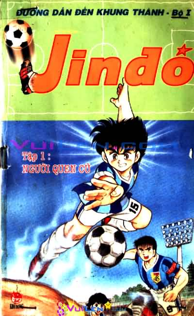

Trang chủ
Film
Manga
Muzik
Pretty
Tryện tranh
7 viên ngọc rồng
Dấu ấn rồng thiêng
Một nửa Ranma

Jindo
Hiệp khách giang hồ
Tiến sĩ Slump
Great Teacher Onizuka

 7 viên ngọc rồng
7 viên ngọc rồng
, level, skill…vô cùng phong phú của game, đồng thời phát triển một cốt truyện gay cấn, với bước chuyển khá “ngọt” từ một câu chuyện có vẻ hài hước ban đầu đến một thiên sử thi bi tráng.") Dấu ấn rồng thiêng
Dấu ấn rồng thiêng
![rânma](../../img/ranma.jpg "Ranma 1/2, còn được biết đến ở Việt Nam với tên gọi Một Nửa Ranma, là bộ truyện nổi tiếng của tác giả Rumiko Takahashi. Ranma 1/2 bắt đầu khi Ranma và ông bố Genma trong một lần đi đến huyện Thanh Hải thuộc Trung Quốc, họ đến con suối nguyền chứa hơn hàng nghìn con suối nhỏ,mỗi con suối lại mang một lời nguyền, ai bị ngã vào suối sẽ buộc phải mang mình thân hình bị nguyền. Không chịu nghe hết lời của hướng dẫn viên du lịch, cả hai cha con cùng đứng lên chiếc cọc tre dựng tạm bợ trên suối để luyện tập. Trong lúc giao chiến, Ranma đã đẩy cha xuống suối “Gấu Trúc chết chìm” và ông mang thân hình của con gấu trúc thật sự. Ngay sau đấy, ông đẩy Ranma xuống dòng sông mang tên “Suối con gái chết chìm” và Ranma từ một cậu con trai phải trở thành một cô gái. Để trở về thân thể thật của mình thì phải dội nước nóng, nhưng khi gặp nước lạnh sẽ bị mang thân hình bị nguyền ngay lập tức.
Đến năm Ranma được 16 tuổi, Genma buộc phải đưa cậu về Nhật Bản để ra mắt gia đình Tendou, ông này có ba cô con gái đã đến tuổi lấy chồng, cũng như theo lời hứa hôn từ trước giữa hai bên gia đình và Ranma sẽ tiếp quản võ đường Tendou theo nguyện vọng của gia đình. Ban đầu Ranma được tự do chọn lựa, nhưng sau đó cậu bị ép lấy cô con gái út Akane Tendou cũng chỉ bằng tuổi cậu nhưng lại rất ghét con trai. Với cơ thể nửa nam nửa nữ của mình, Ranma đã rơi vào vô số tình huống dở khóc dở cười trong thời gian ở với gia đình Tendou trong Ranma 1/2.") Một nửa Ranma
Một nửa Ranma
 Hiệp khách giang hồ
Hiệp khách giang hồ
. Tiến sĩ Slump tạo ra Arale nhằm khẳng định tài năng siêu việt của mình. Nhưng vì một lí do nào đó mà ngay khi hoàn thành Arale đã phải cần đến một cái kính cận. Có thể nói Arale là một cô bé rất ngộ nghĩnh, hiếu động và có sức mạnh kinh hồn. Arale luôn thích những cuộc phiêu lưu và sau những lần đó cô thường mang về nhà những con vật to lớn như khủng long mà lại luôn coi chúng như các con thú cưng.") Tiến sĩ Slump
Tiến sĩ Slump
.
Trước khi Onizuka được công nhận là một giáo viên chính thức, anh sẽ phải làm chủ nhiệm một lớp để thử việc. Onizuka có thể là một tay cứng cựa trên đường phố, nhưng khi được giao vào một lớp đủ mọi thành phần du côn, chơi đểu, và hâm hấp, anh sẽ phải tự chứng tỏ bản thân mình trước lũ học trò nghịch còn hơn quỷ.
Hãy cùng thưởng thức bộ GTO – Great Teacher Onizuka và hoà mình vào những tràng cười bất tận về cuộc đời của Onizuka. Great Teacher Onizuka đã từng được xuất bản ở Việt Nam và rất được các bạn độc giả yêu thích.") Great Teacher Onizuka
Great Teacher Onizuka